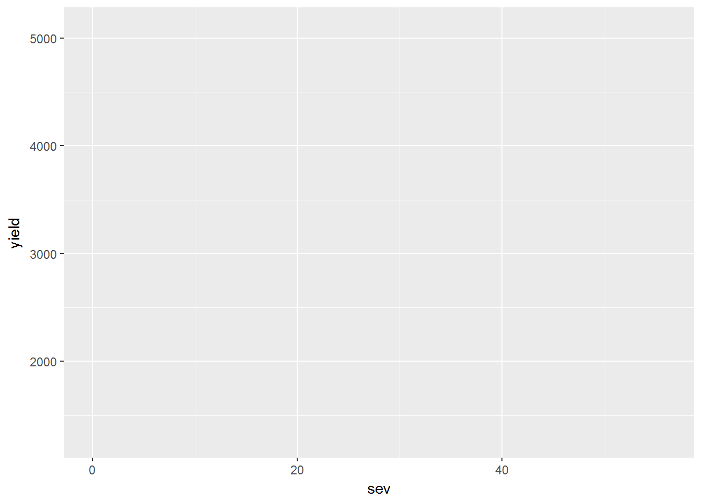
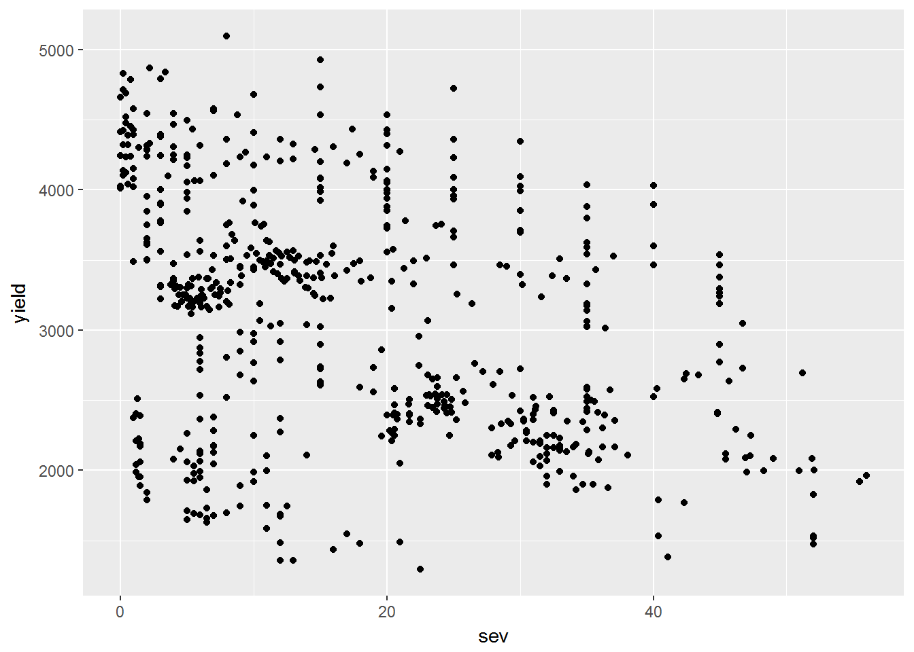
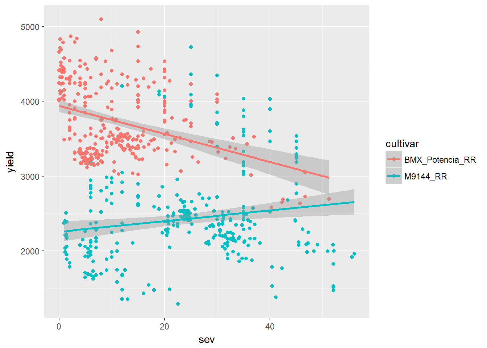
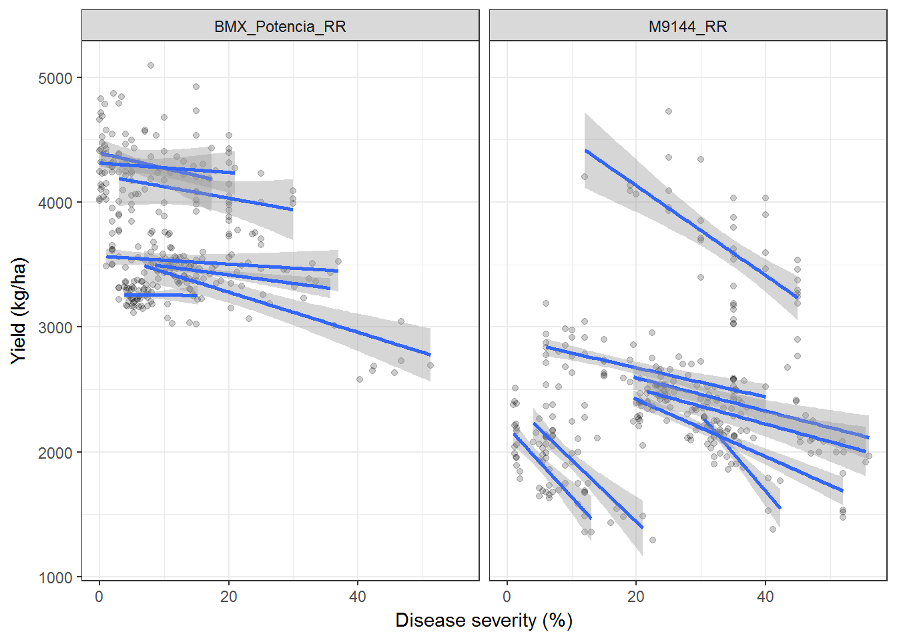

4 Visualizar
Una vez que nuestros datos han sido importados y manipulados podríamos comenzar la exploración numérica y visual de los mismos.
La visualización de datos es parte fundamental del flujo de trabajo de un análisis de datos, tanto para explorar los datos, como para explicar / comunicar los resultados. Es decir, dominar las herramientas de visualización resulta imprescindible para un científico cuya materia prima son los datos.
Los gráficos exploratorios requieren una mínima elaboración, la suficiente para entenderlos y detectar datos anormales (probablemente por error de digitación o outliers).
El paquete ggplot2 se puede utilizar tanto para la creación rápida de gráficos como para gráficos complejos y detallados (con fines de publicaciones científicas). Tiene una gramática propia y la idea original es que un gráfico puede ser elaborado a partir de la combinación de capas, pudiendo tener estas diferentes bases de datos y objetos gráficos (puntos, líneas, barras, etc).
Un mismo dataset puede ser visualizado de múltiples formas, partiendo de la simple visualización de las observaciones con alguna medida de posición como ser la media o mediana. Cuando las observaciones son 5 o más es común acompanãr la media de posición (media o mediana) por alguna medida de dispersión: desvio estándar, error estándar o intervalo de confianza de la media (95% IC).
A continuación se presentan algunas opciones de gráficos que surgen de diferentes combinaciones de medidas de posición y de dispersión.
4.1 Mancha anillada en soja
url1 <- "https://raw.githubusercontent.com/juanchiem/R_Intro/master/data/soja_mancha.csv"
soy <- read.csv(textConnection(RCurl::getURL(url1))) Nos quedaremos solo con dos cultivares: “BMX_Potencia_RR” y “M9144_RR” (nos aseguraremos que no queden ningun otro nivel del factor cultivar)
Exploración del dataset
## cultivar BMX_Potencia_RR M9144_RR
## study
## 6 45 0
## 18 40 0
## 28 36 0
## 31 0 36
## 33 0 36
## 39 0 40
## 41 40 0
## 42 40 0
## 47 0 40
## 52 0 40
## 57 0 36
## 61 0 36
## 63 45 0
## 64 45 0
## 66 0 36Estableceremos quien es el dataset a ser graficado y quienes son las variables en los ejes x e y:

Agregaremos las observaciones

Identificaremos a que cultivar corresponden las observaciones y agregaremos una línea de tendencia general para cada cultivar:

Qué pueden concluir al respecto?
Ahora dividiremos a cada cultivar en paneles individuales e identificaremos las tendencias intra-estudio.
p0 + geom_point(alpha=0.2)+
geom_smooth(method="lm", aes(group = study))+
facet_wrap(~cultivar)+
labs(x="Disease severity (%)", y = "Yield (kg/ha)") +
theme_bw()
Cambiaron los resultados? que puede concluir ahora?